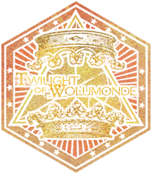

此演示使用 reveal.js 驱动，出现任何情况都*请* **不要** ***大声喧哗***。
背景为暗色，请降低环境亮度。以增加电影观感（
由于需要压缩时长，开始之后，信息密度将会剧增，请各位加快自己的阅读速度。
如果出现了接受端口堵塞或者无法解码的信息，我很抱歉。
事实上，我之所以在这里，便是为了解析这样的数据流。
请注意，这样的文本为原文引用，你可以在故事中找到它们（除此之外），且不会被朗读。
请各位自行阅读以获取信息。
这些内容或许、仅仅或许，并非必要，可以跳过。
请注意，这样的文本为拓展引用，也许来自任何地方，同样不会被朗读。
或许来自整个作品的其他故事。
或许是我自己写的骚话
以下故事纯属虚构，与任何现实人物、国家、事件均无任何关联。
但总是被人们找寻着的、所谓的影射，它仍然存在、永恒地存在。
且总是被以此界定所谓文字的价值，纵然模因的价值并未定义。
也许吧。
托尔再次试图刺杀贵族。未遂。
无从得知他是否满足于他“拯救”了沃伦姆德。
至少他在计划的时候如此认为。
“既然如此，不如让我们来提前铺好路，尽可能少死点人。”…… “我们都在犯罪。不过不是因为行动而犯罪，是因为放弃行动而犯罪，有很多人都是这样犯罪的......”…… “这一切......都是为了更多的生命。”
|
“非戏剧性惨案” |
||
|---|---|---|
|  |
您目睹了一切。 |
|
回到事件本身。
“只有经历过冲突的两端，你才能真正理解它。”
这是必要条件，而非充分条件。
如果细致的分析整件事，对错将更加不明显。
而那些看不清是非的人，那些已经无法保留理智的人，靠阵容对立掩盖自己的无力感，审判对手，转嫁矛盾。
每个人都认为自己能分辨对错，明辨是非。
可事实并非如此，一切都按照托尔的想法进行着。
他早就预见了一切、已经无法挽回。
并非所有故事都有始有终，不可知物有何意义？
最终，结论是什么？
我们无能为力。
这便是所有的结果。
可是，假如现在你走在路上，有一个暴徒持刀拦路，逼问你他该如何活下去——
他想的是怎么杀了你开辟一条生路，而你想的是要立刻开火还是想办法拉开距离再开火——
想要活下去的大部分时候，事实就这么简单。
感谢各位